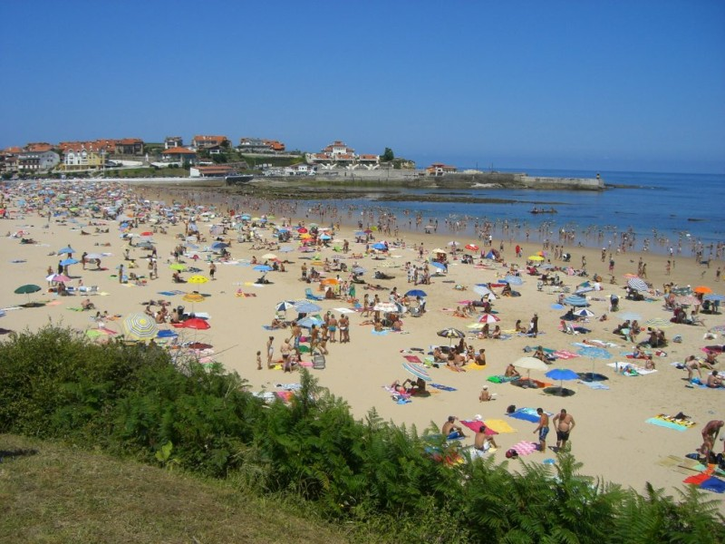

Mike
I have a friend called Michael Paixo. His nickname is "Mike". Mike's father is Canadian and his mother is Portuguese. He was born in Montréal, in the French-speaking part of Canada. He speaks English, French and Portuguese as well as a native speaker. He also speaks Spanish and a little German.
Mike likes to be a clown. He can juggle three balls. He can ride a unicycle. He can make people laugh by the way he moves and the expressions on his face. People feel happy when they see him.

In the summer of 2008, Mike was in Camillas, in Spain. Almost every day, he went to the beach. He wore funny clothes. He wore a big hat. Other people came to the beach to swim and to lie on the sand in the sunshine. Mike talked to many people. He spoke in good English, French and Portuguese. He spoke in Spanish, and also in bad German. Sometimes he made sounds like words, but they were not words in any language. He juggled and made silly faces, and made people laugh. Then he held out his big hat and people put money in it. He made many friends.

One day, he did not go to the beach. The next day, a friend said to him, "Mike! Last night, there was a big fight at the beach. The police came to stop it. Did you see it?"
"No," said Mike. "I wasn't there. I wasn't working yesterday."
Mike worked at the beach for many weeks. Sometimes, when he had enough money, he took a rest for a day. Several times, his friends told him about fights on the beach at night. Each time, Mike was not at the beach when the fight happened. Each time, it happened on a day when Mike did not go to the beach to juggle and make people laugh. At last he thought: "Perhaps there is a connection. Perhaps there is a link between me and these fights. Perhaps I do something that makes people not want to fight."
One day, he went to the beach, just like everyone else: with his swimming trunks and a towel. He swam and he lay on the sand. He ate food and drank beer. He talked only with his friends. He did not work. He had fun.
He saw that many people were not having fun. There were people from England, France, Spain, Portugal, Germany and other countries. People from one country did not talk to people from another country. He saw people frown when they heard other languages. That night, there was a fight, and this time Mike saw it.
He understood: "I speak many languages. When I work on the beach, I talk to people. I help people from different countries to feel good together. I help people to understand each other. I create links between them. I am better than the police. I can stop a fight before it even starts."